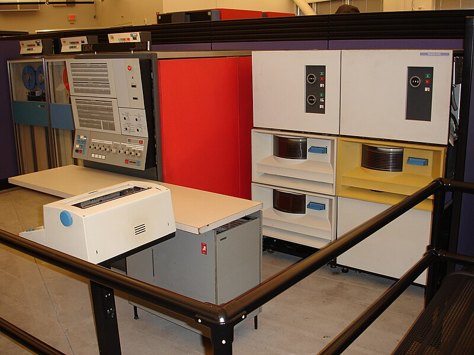
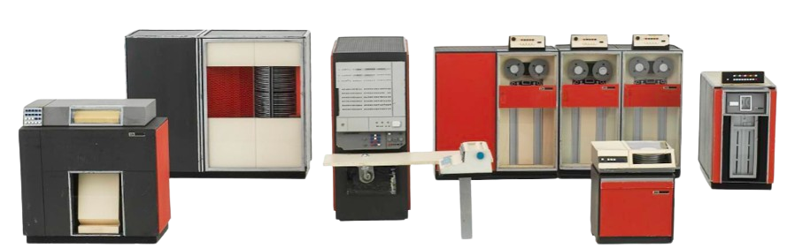
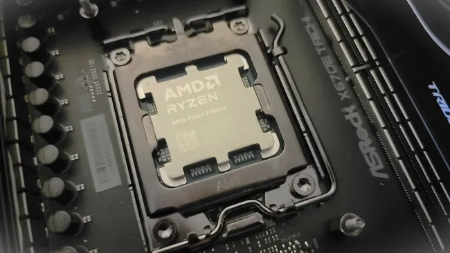

IBM System/360
Veille Technologique – Technologie Ancienne · BTS SIO SISR
Caractéristiques et Innovations
- Compatibilité Ascendante : L'un des aspects révolutionnaires du System/360 était sa compatibilité ascendante. Les programmes écrits pour un modèle pouvaient fonctionner sur un modèle plus puissant sans modification, ce qui était une innovation majeure à l'époque (World Economic Forum).
- Architecture Modulaire : L'architecture du System/360 permettait une large gamme de configurations matérielles, de la petite machine pour les petites entreprises aux grands systèmes pour les grandes organisations, rendant l'ordinateur accessible à un plus large éventail d'utilisateurs (World Economic Forum).
- Norme de l'Industrie : Le System/360 a établi des normes pour les formats de données, les instructions machine et les interfaces périphériques, qui ont perduré pendant des décennies et ont influencé le développement de futurs systèmes (World Economic Forum, StartUs Insights).

Impact Historique
- Centralisation des Données : Le System/360 a permis une centralisation efficace des données, favorisant une meilleure gestion et sécurité des informations, un aspect crucial pour les entreprises.
- Développement de Logiciels : Avec une base installée large et compatible, le System/360 a stimulé le développement d'une vaste gamme de logiciels d'application, contribuant à la croissance de l'industrie du logiciel.
- Économie et Société : En automatisant de nombreux processus administratifs et en améliorant l'efficacité opérationnelle des entreprises, le System/360 a eu un impact significatif sur l'économie et la société en général.

Pourquoi cette Technologie est Pertinente
Étudier l'IBM System/360 dans le cadre d'une formation BTS SIO option SISR est pertinent pour plusieurs raisons :
- Fondation des Connaissances : Comprendre les technologies qui ont fondé les bases des systèmes modernes permet d'avoir une perspective plus complète de l'évolution des systèmes informatiques et des réseaux.
- Évolution des Systèmes : Analyser comment les concepts introduits par l'IBM System/360 ont évolué jusqu'aux systèmes actuels aide à mieux comprendre les défis et les solutions dans le domaine des systèmes d'information.
- Innovation : L'histoire de l'IBM System/360 est une leçon sur l'importance de l'innovation dans le développement technologique.

Conclusion
L'IBM System/360 représente une avancée technologique majeure du passé qui a eu un impact durable sur le développement des systèmes informatiques. Ce système a posé les bases de nombreuses normes et architectures utilisées encore aujourd'hui, influençant non seulement l'industrie des mainframes, mais aussi l'ensemble de l'écosystème informatique.
En offrant une compatibilité ascendante et une modularité sans précédent à l'époque, il a permis une adoption plus large des technologies informatiques dans les entreprises de toutes tailles. De plus, l'IBM System/360 a non seulement favorisé l'essor du logiciel d'entreprise, mais a aussi jeté les bases pour l'évolution des systèmes modernes.
Pour en savoir plus, vous pouvez consulter le Computer History Museum, StartUs Insights et ISHIR Software Development.